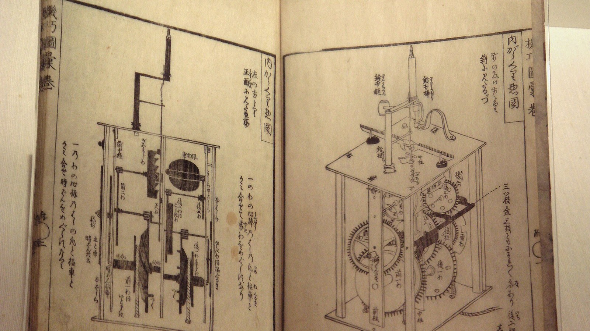
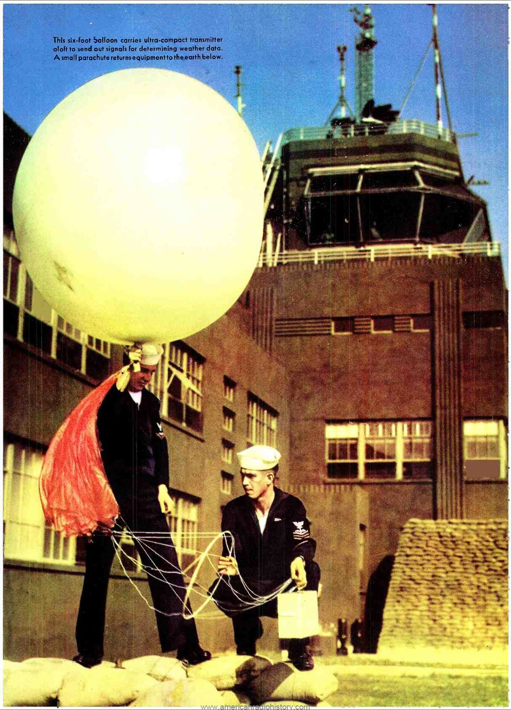
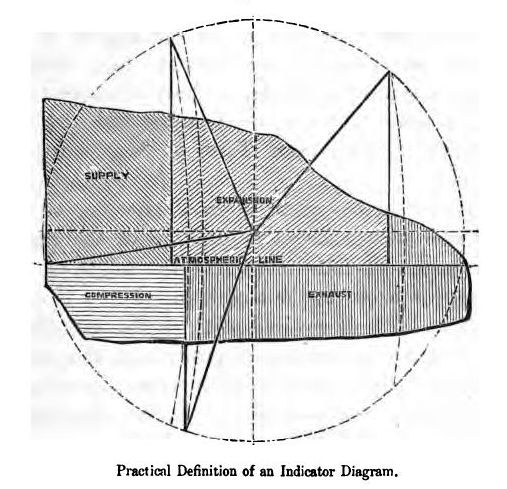

第12回
歯車が次の歯車を回し、動きが次々に伝わっていく。
細川半蔵『機巧図彙』（1796年）／CC BY-SA 3.0／Wikimedia Commons（横長に切り出した。撮影：PHGCOM）
変数が2つ以上あるとき、「ひとつだけ動かす」偏微分では足りない場面が必ず来る。複数の変数が同時に動くときの変化（全微分）と、変数がさらに別の変数に依存するときの微分（連鎖律）を、1行ずつ展開する。多くの人が事故を起こす d/dt と ∂/∂t の違い、流体で出てくる物質微分、勾配の予告までを扱う。
第1回から続く約束どおり、新しい記号は緑色の枠（記号）で「①読み方 ②日本語での意味 ③省略していない書き方 ④どこで出会うか」を書く。この回は、偏微分の省略が積み重なって事故を起こす場所そのものを扱う。だから、連鎖律の省略の段階を S0 から S4 まで1段ずつ並べ、どの段で「何が固定されているか」が見えなくなるかを示す。
高校の数学Ⅲで習った1変数の合成関数の微分も、仮定せずに一度は書く。覚えている部分は飛ばしてよい。すべての導出は、数値で一度手を動かしてから文字の式に進む。
なお、勾配 $\nabla f$（第23回）、ヤコビ行列（第33回）、誤差伝播の本格的な扱い（第45回）は、この回では予告だけにする。予告した記号は、その回で改めて「記号」の枠として説明する。
最初に、この回で新しく説明する記号と、前の回で説明済みの記号を分けて並べる。右の列の「→」で説明のある場所へ飛べる。
| 記号 | 読み方 | ざっくりした意味 | 説明 |
|---|---|---|---|
| $df=\dfrac{\partial f}{\partial x}dx+\dfrac{\partial f}{\partial y}dy$（全微分） | ディー・エフ イコール …（ぜんびぶん） | $x,y$ が同時に少し動いたときの、$f$ の変化のおよその大きさ | →2.4 |
| $\dfrac{dz}{dt}=\dfrac{\partial z}{\partial x}\dfrac{dx}{dt}+\dfrac{\partial z}{\partial y}\dfrac{dy}{dt}$（連鎖律） | ディー・ゼット・ディー・ティー イコール … | $z$ が $x,y$ を通して $t$ に依存するときの、$t$ による変化率 | →3.3 |
| 中間変数・独立変数 | ちゅうかんへんすう・どくりつへんすう | 途中にある変数（$x,y$）と、いちばん元の変数（$t$） | →3.1 |
| $\dfrac{d}{dt}$ と $\dfrac{\partial}{\partial t}$ の区別 | ディー・ディー・ティーとパーシャル・ティー | 「$t$ ですべてを動かす」か「$t$ だけを動かして他を止める」か | →4.2 |
| $\dfrac{D}{Dt}$（物質微分） | ラージ・ディー・ディー・ティー | 流れに乗って動く粒子が感じる変化率 | →4.6 |
| $\dfrac{dy}{dx}=-\dfrac{F_x}{F_y}$（陰関数の微分） | ディー・ワイ・ディー・エックス イコール マイナス … | $F(x,y)=0$ から $y'$ を求める公式 | →5.2 |
| $\nabla f$（勾配、予告） | ナブラ・エフ、グラディエント・エフ | $f_x,f_y$ を並べたベクトル（第23回で詳しく） | →6.1 |
| 記号 | 意味 | 初出 |
|---|---|---|
| $=$、$:=$ | 等しい／左の名前を右の式で決める | 第1回 2.1、第1回 2.2 |
| $\approx$ | ほぼ等しい（どれくらいかは書かれていない） | 第1回 2.4 |
| $x_1$（添字） | 名前に番号やラベルをつける | 第1回 4.1 |
| $f'$（プライム） | 導関数 | 第1回 4.4 |
| 省略の段階（S0, S1, …） | 省略の度合いを段階で呼ぶ | 第1回 6.1 |
| $\mathbb R$（実数の集まり）、$\in$ | 実数全体／要素である | 第2回、第2回 |
| $\forall$（すべての）、$\exists$（存在する） | 量化子 | 第2回、第2回 |
| $f\colon A\to B$、$f(x)$、$x\mapsto$ | 関数、関数の値、対応の矢印 | 第3回、第3回、第3回 |
| $g\circ f$（合成） | $f$ を先に、$g$ を後に施す | 第3回 2.1 |
| $f(x,y)$（多変数関数） | 入力が2つ以上の関数 | 第3回 6.1 |
| $F(x,y)=0$（陰関数）、$x=x(t)$（媒介変数） | 式のまま与える関数、別の変数を経由する書き方 | 第3回 6.2、第3回 6.3 |
| 引数の省略の段階 $\psi(x,t)\to\psi$ | どの変数の関数かを書かない省略 | 第3回 7.1 |
| $\displaystyle\sum$（総和） | 足し算の記号 | 第4回 2.1 |
| 太字 $\boldsymbol a$（ベクトル）、成分、内積 $\boldsymbol a\cdot\boldsymbol b$ | 数の組、その中の数、成分どうしの積の和 | 第5回、第5回、第5回 |
| $o(\cdot)$（ランダウの小文字 o） | 「それより速く0に近づく量」 | 第6回 |
| $\displaystyle\lim$、$\to$ | 極限、近づく | 第6回、第6回 |
| $\dfrac{df}{dx}$、$f'$、$\dot x$（微分の書き方） | 導関数の3つの書き方 | 第7回、第7回、第7回 |
| $\Delta x$（変化量） | $x$ の変化量 | 第7回 |
| 微分の規則（積・商・合成） | 導関数の求め方の規則 | 第7回 |
| $df,\ dx$（微分）、1次近似 | 小さな変化の1次の部分、接線で近似すること | 第8回、第8回 |
| $\dfrac{\partial f}{\partial x}$、$f_x$、$\partial_x f$ | 偏微分と、その書き方 | 第11回、第11回 |
| $\left(\dfrac{\partial f}{\partial x}\right)_y$ | 何を固定しているかを添える偏微分（熱力学の流儀） | 第11回 |
| 偏微分の省略の段階 | 何を固定しているかの省略 | 第11回 |
金属の薄い板があり、その上の点 $(x,y)$ での温度が $T(x,y)$ で決まっているとする。第3回の多変数関数の例である。温度計を持った小さな虫が、この板の上を歩いている。時刻 $t$ に虫がいる位置は $(x(t),\,y(t))$ である（第3回の媒介変数表示）。
虫の温度計が示す値は、時刻 $t$ の関数になる。それを $T(x(t),y(t))$ と書く。知りたいのは、温度計の値が時間とともにどれくらいの速さで変わるかである。
ここで第11回の偏微分を思い出す。$\dfrac{\partial T}{\partial x}$ は「$y$ を止めて、$x$ だけを動かしたときの変化率」である。ところが虫は、$x$ だけを動かして歩くとは限らない。$x$ も $y$ も同時に動く。偏微分は「ひとつだけ動かす」という約束で作った量なので、そのままでは、この問いに答えられない。
板の温度を等温線（温度の等しい点を結んだ線）で描き、その上に虫の歩く道を重ねると図1.1 になる。
この回の目的は、次の2つである。
そして第4節で、この2つの話を同じ文字で書くと事故が起きる理由を示す。
まず、変数がひとつの場合の連鎖律を確かめる。多変数の連鎖律は、これを「経路ごとに足す」形に広げたものだからである。
設定：$y=f(x)$ で、さらに $x=g(t)$ のとき、$y$ は $t$ の関数 $y=f(g(t))$ になる（第3回の合成 $f\circ g$）。この $y$ を $t$ で微分する。
最小の具体例：$f(x)=x^2$、$g(t)=3t+1$ とする。
① 先に合成する：$y=(3t+1)^2=9t^2+6t+1$。
② $t$ で微分する：$\dfrac{dy}{dt}=18t+6$。
③ $t=1$ で値を出す：$18\cdot1+6=24$。
次に、連鎖律の形で計算する。「$y$ を $x$ で微分したもの」と「$x$ を $t$ で微分したもの」を掛ける。
④ $\dfrac{dy}{dx}=2x$、$\dfrac{dx}{dt}=3$。
⑤ 掛ける：$\dfrac{dy}{dt}=\dfrac{dy}{dx}\cdot\dfrac{dx}{dt}=2x\cdot 3=6x$。
⑥ $x$ を $t$ で書き直す：$6x=6(3t+1)=18t+6$。
⑦ $t=1$ のとき $x=3\cdot1+1=4$ だから、$6x=24$。③と一致。
④〜⑦の計算を、値の受け渡しの図にすると図1.2 になる。
導出（なぜ掛けてよいか）：$t$ を $\Delta t$ だけ動かしたとき、$x$ が $\Delta x$、$y$ が $\Delta y$ だけ変わるとする（第7回の $\Delta x$）。
① $\dfrac{\Delta y}{\Delta t}=\dfrac{\Delta y}{\Delta x}\cdot\dfrac{\Delta x}{\Delta t}$
② $\Delta t\to0$ とすると $\Delta x\to0$ である。
③ よって $\dfrac{\Delta y}{\Delta x}\to\dfrac{dy}{dx}$、$\dfrac{\Delta x}{\Delta t}\to\dfrac{dx}{dt}$。
④ ゆえに $\dfrac{dy}{dt}=\dfrac{dy}{dx}\dfrac{dx}{dt}$。
①の「分母分子に同じものを入れた」は、$\dfrac{dy}{dx}$ や $\dfrac{dx}{dt}$ を分数として約分しているわけではない。$\dfrac{dy}{dx}$ は「$\Delta y/\Delta x$ の極限」を表す1つの記号であり、$dy$ を $dx$ で割った分数だと決めつけてよいのは、第8回で $dy$ と $dx$ を独立した記号として定義した範囲に限る。また、①では $\Delta x=0$ になる $\Delta t$ がありうる（たとえば $x$ が一定のとき）。その場合の厳密な扱いは第7回の微分の規則に委ね、この回では「合成関数の微分の規則が成り立つ」ことだけを使う。
1変数の関数 $y=f(x)$ では、$x$ が $\Delta x$ だけ動いたときの $y$ の変化 $\Delta y=f(x+\Delta x)-f(x)$ は、$\Delta x$ が小さければ
$$ \Delta y\approx f'(x)\,\Delta x $$
となる（第8回の1次近似。接線で曲線を置き換える）。第8回の微分 $df$ は、この右辺の $f'(x)\,dx$ を「$dx$ という小さな変化に対する、1次の部分」として記号にしたものだった。
数値で確かめる。$f(x)=x^2$、$x=2$、$\Delta x=0.1$ とする。
① 本当の変化：$\Delta y=f(2.1)-f(2)=4.41-4=0.41$。
② 1次の部分：$f'(2)\cdot0.1=4\cdot0.1=0.4$。
③ 差：$0.41-0.4=0.01$。これは $(\Delta x)^2=0.01$ に等しい。
④ 差は $\Delta x$ より速く0に近づく（$o(\Delta x)$）。
$\Delta y$ と $f'(x)\,\Delta x$ の関係を、目で見える大きさ（$\Delta x=0.5$）で描くと図1.3 になる。
この回の全微分は、これとまったく同じ考え方を、変数が2つ以上の場合に広げたものである。
第11回で定義した偏微分を、この回で使う形で書き直す。$f(x,y)$ を2変数関数とする。点 $(a,b)$ で、
$$ \frac{\partial f}{\partial x}(a,b) := \lim_{\Delta x\to0}\frac{f(a+\Delta x,\,b)-f(a,\,b)}{\Delta x} $$
と定める。$y$ は $b$ のまま動かさず、$x$ だけを $a$ から $a+\Delta x$ へ動かしている。$y$ の方の偏微分 $\dfrac{\partial f}{\partial y}(a,b)$ も、$x$ を $a$ のまま止めて、$y$ だけを動かして同じように定める。
数値例：$f(x,y)=x^2y$、点 $(2,3)$。
① $\dfrac{\partial f}{\partial x}=2xy$ 。点 $(2,3)$ では $2\cdot2\cdot3=12$。
② $\dfrac{\partial f}{\partial y}=x^2$ 。点 $(2,3)$ では $2^2=4$。
また $f(2,3)=2^2\cdot3=12$ である。この3つの数 $f=12$、$f_x=12$、$f_y=4$ を、以下で何度も使う。$f_x$ は $\dfrac{\partial f}{\partial x}$ の短い書き方である。
$f(x,y)$ で、$x$ が $\Delta x$、$y$ が $\Delta y$ だけ同時に動いたときの $f$ の変化
$$ \Delta f := f(a+\Delta x,\ b+\Delta y)-f(a,\ b) $$
を、偏微分を使って近似したい。1変数では $\Delta y\approx f'(x)\Delta x$ だった。2変数では、動かす方向が2つあるので、それぞれの方向の変化率と、それぞれの動きが1組ずつ現れると予想できる。この予想を、数値で確かめてから導出する。
$f(x,y)=x^2y$、点 $(a,b)=(2,3)$、$\Delta x=0.1$、$\Delta y=0.2$ とする。1.4 で求めたとおり $f(2,3)=12$、$f_x(2,3)=12$、$f_y(2,3)=4$。
① 動いた先の点は $(2.1,\ 3.2)$。
② $f(2.1,3.2)=2.1^2\cdot3.2=4.41\cdot3.2=14.112$。
③ 本当の変化：$\Delta f=14.112-12=2.112$。
④ 予想の式：$f_x\Delta x+f_y\Delta y=12\cdot0.1+4\cdot0.2=1.2+0.8=2.0$。
⑤ 差：$2.112-2.0=0.112$。本当の変化 2.112 に対して約5%のずれである。
予想はおおよそ当たっている。ずれが「何のずれか」を知るために、2歩に分けて調べる。
同時に動く代わりに、1歩ずつ動く。まず $y$ だけを $b$ から $b+\Delta y$ へ動かし、次に $x$ だけを $a$ から $a+\Delta x$ へ動かす。途中の点を $P_1=(a,\ b+\Delta y)$ とする。
図2.1 は、点 $P_0$ から $P_2$ へ、斜めに一度で進む代わりに、まず上へ、次に右へ進む道である。数値例（$f=x^2y$、$(a,b)=(2,3)$、$\Delta x=0.1$、$\Delta y=0.2$）の値を書き込んだ。
$\Delta f$ を、途中の値 $f(a,\ b+\Delta y)$ を足して引くことで2つに割る。
① $\Delta f=f(a+\Delta x,\ b+\Delta y)-f(a,\ b)$
② $\Delta f=\bigl[f(a+\Delta x,\ b+\Delta y)-f(a,\ b+\Delta y)\bigr]+\bigl[f(a,\ b+\Delta y)-f(a,\ b)\bigr]$
数値例で②を確かめる。$f=x^2y$、$(a,b)=(2,3)$、$\Delta x=0.1$、$\Delta y=0.2$：
・第1の括弧（$x$ だけ動かす、$y=b+\Delta y=3.2$ で固定）：$f(2.1,3.2)-f(2,3.2)=14.112-12.8=1.312$。
・第2の括弧（$y$ だけ動かす、$x=a=2$ で固定）：$f(2,3.2)-f(2,3)=12.8-12=0.8$。
・和：$1.312+0.8=2.112$。③の $\Delta f$ と一致する。
各括弧は、変数がひとつだけ動いているから、1変数の話に戻せる。
③ 第1の括弧：$y$ は $b+\Delta y$ で止まっていて、$x$ だけが $a$ から $a+\Delta x$ へ動く。1変数の関数 $x\mapsto f(x,\ b+\Delta y)$ に平均値の定理（途中のどこかの点で、変化率が全体の平均変化率に等しくなる。第8回）を使うと、$a$ と $a+\Delta x$ の間の適当な数 $\xi$ があって、
$$ f(a+\Delta x,\ b+\Delta y)-f(a,\ b+\Delta y)=\frac{\partial f}{\partial x}(\xi,\ b+\Delta y)\ \Delta x $$
④ 第2の括弧も同じ理由で、$b$ と $b+\Delta y$ の間の適当な数 $\eta$ があって、
$$ f(a,\ b+\Delta y)-f(a,\ b)=\frac{\partial f}{\partial y}(a,\ \eta)\ \Delta y $$
⑤ ③と④を②に入れる：
$$ \Delta f=\frac{\partial f}{\partial x}(\xi,\ b+\Delta y)\ \Delta x+\frac{\partial f}{\partial y}(a,\ \eta)\ \Delta y $$
この式は等式であり、近似ではない。ただし $\xi,\eta$ は「どこか」としか分からない。
⑥ ここで偏導関数 $f_x,f_y$ が点 $(a,b)$ で連続だと仮定する（第6回の連続）。$\Delta x,\Delta y\to0$ のとき $(\xi,\ b+\Delta y)\to(a,b)$、$(a,\eta)\to(a,b)$ だから、
$$ \frac{\partial f}{\partial x}(\xi,\ b+\Delta y)=\frac{\partial f}{\partial x}(a,b)+\varepsilon_1,\qquad \frac{\partial f}{\partial y}(a,\eta)=\frac{\partial f}{\partial y}(a,b)+\varepsilon_2 $$
と書ける。$\varepsilon_1,\varepsilon_2$ は、$\Delta x,\Delta y\to0$ のとき0に近づく量である。
⑦ ⑥を⑤に入れる：
$$ \Delta f=\frac{\partial f}{\partial x}(a,b)\,\Delta x+\frac{\partial f}{\partial y}(a,b)\,\Delta y+\varepsilon_1\Delta x+\varepsilon_2\Delta y $$
最後の2項 $\varepsilon_1\Delta x+\varepsilon_2\Delta y$ は、「0に近づく量×小さい量」だから、$\Delta x,\Delta y$ そのものよりずっと速く0に近づく。これが、2.2 の⑤で見た「ずれ」の正体である（数値は2.5で確かめる）。
①読み方：「ディー・エフ イコール、パーシャル・エフ・パーシャル・エックス かける ディー・エックス、プラス、パーシャル・エフ・パーシャル・ワイ かける ディー・ワイ」。この式の名前は「ぜんびぶん」（全微分）。
②日本語での意味：$x$ と $y$ が同時に少しだけ動いたとき、$f$ の変化のうち「動きの大きさに比例する部分（1次の部分）」。内訳は、「$x$ 方向の変化率に $x$ の動きを掛けたもの」と「$y$ 方向の変化率に $y$ の動きを掛けたもの」の和。
③省略していない書き方：次の3つの省略を戻す。
④どこで出会うか：熱力学（$dU=T\,dS-p\,dV$、内部エネルギーの全微分）、誤差の評価（第7節、第45回）、機械力学・制御（線形化）、微分方程式（完全微分形）。
この定義がどんな条件で意味を持つかを、言葉にしておく。
2変数関数 $f$ が点 $(a,b)$ で全微分可能であるとは、ある2つの数 $A,B$ があって、
$$ \Delta f=A\,\Delta x+B\,\Delta y+o\!\left(\sqrt{(\Delta x)^2+(\Delta y)^2}\right)\qquad(\Delta x,\Delta y\to0) $$
と書けることである。ここで $o(\cdot)$ は第6回のランダウの記号で、「$\sqrt{(\Delta x)^2+(\Delta y)^2}$（動いた距離）で割っても0に近づく量」の意味。
このとき $A=\dfrac{\partial f}{\partial x}(a,b)$、$B=\dfrac{\partial f}{\partial y}(a,b)$ でなければならない。理由：$\Delta y=0$ とおくと $\Delta f=A\,\Delta x+o(|\Delta x|)$。両辺を $\Delta x$ で割って $\Delta x\to0$ とすると、左辺は偏微分の定義そのもの、右辺は $A$ になる。$B$ も同じ。
2.3 の⑦は、「$f_x,f_y$ が点 $(a,b)$ で連続なら、$f$ は全微分可能である」ことを示している。この条件は教科書では次のように述べられる（偏導関数が連続な関数を「$C^1$ 級」とよぶ）。
$f_x,f_y$ が点 $(a,b)$ の近くで存在し、点 $(a,b)$ で連続ならば、$f$ は $(a,b)$ で全微分可能で、$df=f_x\,dx+f_y\,dy$ が成り立つ。
2.2 の例で、$(\Delta x,\Delta y)=(0.1,0.2)$ を $k$ 倍に縮める。$\Delta f$ と $df=12\Delta x+4\Delta y$ の差が、動きの大きさに対してどう小さくなるかを見る。
| 倍率 $k$ | $\Delta x$ | $\Delta y$ | 本当の変化 $\Delta f$ | $df$ | 差 $\Delta f-df$ | 差 $/\,k^2$ |
|---|---|---|---|---|---|---|
| $1$ | $0.1$ | $0.2$ | $2.1120$ | $2.0000$ | $0.1120$ | $0.1120$ |
| $0.5$ | $0.05$ | $0.1$ | $1.02775$ | $1.0000$ | $0.02775$ | $0.1110$ |
| $0.1$ | $0.01$ | $0.02$ | $0.201102$ | $0.2000$ | $0.001102$ | $0.1102$ |
| $0.01$ | $0.001$ | $0.002$ | $0.0200110$ | $0.0200$ | $0.0000110$ | $0.1100$ |
動きを $1/2$、$1/10$、$1/100$ にすると、差は約 $1/4$、$1/100$、$1/10000$ になる。つまり差は動きの2乗に比例して小さくなる（最右列がほぼ一定の 0.11）。だから $df$ は、動きが小さいほど $\Delta f$ のよい近似になる。2.4 の「$o(\cdot)$」が、実際にこの速さで起きている。
表の数を $k$ の関数としてグラフにすると、図2.2 になる。
また、1変数に戻るかも確かめる。$y$ を動かさない（$dy=0$）とすると、$df=\dfrac{\partial f}{\partial x}dx$。$f$ が $x$ だけの関数なら $\dfrac{\partial f}{\partial x}=f'(x)$ なので $df=f'(x)\,dx$、1.3 の式に戻る。
$z=f(x,y)$ のグラフは曲面である。1変数で「接線で曲線を置き換える」のと同じように、2変数では「接平面で曲面を置き換える」。点 $(a,b)$ のまわりで、2.4 の全微分を使うと、
$$ z\approx f(a,b)+\frac{\partial f}{\partial x}(a,b)\,(x-a)+\frac{\partial f}{\partial y}(a,b)\,(y-b) $$
となる。ここで $x-a=\Delta x$、$y-b=\Delta y$ と見た。右辺は $x,y$ の1次式だから、グラフは平面になる。これが接平面である（第8回の1次近似の2変数版）。
数値例：$f=x^2y$、点 $(2,3)$：$z\approx12+12(x-2)+4(y-3)=12x+4y-24$。この平面の、点 $(2.1,\ 3.2)$ での高さは $12\cdot2.1+4\cdot3.2-24=25.2+12.8-24=14.0$。本当の値 $f(2.1,3.2)=14.112$ との差は $0.112$、2.2 の⑤と同じである。
曲面と接平面を、2.2 で動いた向き（$\Delta x:\Delta y=0.1:0.2$）の切り口で比べると、図2.3 になる。
「$f_x$ と $f_y$ がある点でどちらも存在すれば、$df=f_x\,dx+f_y\,dy$ が使える」は誤りである。2.4 の定理の条件は「存在する」ではなく「連続である」（または全微分可能そのもの）だった。
反例：$f(x,y)=\dfrac{xy}{x^2+y^2}$（$(x,y)\neq(0,0)$）、$f(0,0)=0$ とする。
① $f(x,0)=0$ がすべての $x$ で成り立つ。
② よって $f_x(0,0)=\displaystyle\lim_{h\to0}\dfrac{f(h,0)-f(0,0)}{h}=\lim_{h\to0}\dfrac{0-0}{h}=0$。同じように $f_y(0,0)=0$。偏微分はどちらも存在する。
③ ところが、$y=x$ に沿って原点へ近づくと、$f(h,h)=\dfrac{h^2}{h^2+h^2}=\dfrac12$。
④ $f(0,0)=0$ なのに、原点に近づく値は $\dfrac12$ のまま。$f$ は原点で連続でない。連続でなければ、$\Delta f=0\cdot\Delta x+0\cdot\Delta y+o(\cdot)$ とは書けない（$\Delta f=\dfrac12$ が0に近づかない）。
③④を、原点に近づく2本の道の上での値として描くと図2.4 になる（第11回の図2.5 も見よ）。
⑤ 結論：$f_x(0,0)=f_y(0,0)=0$ だが、全微分 $df=0\cdot dx+0\cdot dy$ は成り立たない。
1変数では「微分できれば連続」だったので、この現象は初めて出会う人に意外である。偏微分は「軸に沿った2方向だけ」を見ているため、斜めの動きは見えていない。全微分は「すべての方向」を同時に見る、より強い条件である。
PHOTO 1｜現実
歯車がかみ合っていた、古代ギリシャの装置の断片である。
Marsyas（2005年、アンティキティラ島の機械の断片A）／CC BY 2.5／Wikimedia Commons（縮小した）
MITATE 1｜見立て
滝は、いくつもの流れに分かれて、岩を下っていく。
葛飾北斎『諸国瀧廻り 下野黒髪山きりふりの滝』（1831〜32年ごろ）／Public domain／Wikimedia Commons（縮小した）
第1節の問いに戻る。板の温度 $T(x,y)$ と、虫の位置 $(x(t),\,y(t))$ が与えられたとき、虫の温度計の値 $T(x(t),y(t))$ の時間変化率 $\dfrac{dT}{dt}$ を求めたい。一般の形で、温度を $z$、$T$ を $f$ に書き直して述べる。
①読み方：「ちゅうかんへんすう」「どくりつへんすう」。
②日本語での意味：$z=f(x,y)$、$x=x(t)$、$y=y(t)$ のとき、$t$ が独立変数（いちばん元の、自由に動かせる変数）、$x,y$ が中間変数（$t$ に決められ、$z$ を決める途中の変数）、$z$ が従属変数（最後に決まる量）。
③省略していない書き方：$z=f(x(t),\,y(t))$ という合成の形。「$z$ は $x,y$ の関数」と「$z$ は $t$ の関数」は、同じ $z$ を指しているが、関数としては別物である（第4節で詳しく扱う）。
④どこで出会うか：媒介変数表示（第3回 6.3）、運動する点での物理量の変化、座標変換（極座標など）。
$f(x,y)=x^2y$、$x=2t$、$y=t^2$ とする。時刻 $t=1$ では $(x,y)=(2,1)$。
方法A：先に代入して、1変数にする
① $f(x(t),y(t))=(2t)^2\cdot t^2$
② $=4t^2\cdot t^2=4t^4$
③ $\dfrac{df}{dt}=16t^3$
④ $t=1$ で $16$。
方法A で作った1変数関数 $4t^4$ のグラフを描くと、図3.1 になる。
方法B：偏微分と、$x,y$ の変化率を掛けて足す
① $\dfrac{\partial f}{\partial x}=2xy$、$\dfrac{\partial f}{\partial y}=x^2$。
② $\dfrac{dx}{dt}=2$、$\dfrac{dy}{dt}=2t$。
③ $t=1$ では $x=2$、$y=1$、$\dfrac{dy}{dt}=2$。よって $\dfrac{\partial f}{\partial x}=2\cdot2\cdot1=4$、$\dfrac{\partial f}{\partial y}=2^2=4$。
④ $\dfrac{\partial f}{\partial x}\dfrac{dx}{dt}+\dfrac{\partial f}{\partial y}\dfrac{dy}{dt}=4\cdot2+4\cdot2=8+8=16$。
偏微分を使う方法Bの答えが、代入する方法Aの答えと一致した。なぜ一致するかを、次の導出で示す。
さらに数値で確かめる：本当に $t=1$ の近くで $f$ が毎秒16の速さで増えているか。$\Delta t=0.01$ として、$f(t=1.01)=4\cdot1.01^4=4\cdot1.04060401=4.16241604$、$f(t=1)=4$。平均変化率は $\dfrac{4.16241604-4}{0.01}=16.241604$。16に近い（$\Delta t\to0$ で16になる）。
$z=f(x,y)$、$x=x(t)$、$y=y(t)$ で、$f_x,f_y$ は連続、$x(t),y(t)$ は微分できるとする。時刻 $t$ から $t+\Delta t$ に進んだとき、$x$ は $\Delta x$、$y$ は $\Delta y$、$z$ は $\Delta z$ だけ変わるとする。
① $\Delta z=\dfrac{\partial f}{\partial x}\Delta x+\dfrac{\partial f}{\partial y}\Delta y+\varepsilon_1\Delta x+\varepsilon_2\Delta y$
② $\dfrac{\Delta z}{\Delta t}=\dfrac{\partial f}{\partial x}\dfrac{\Delta x}{\Delta t}+\dfrac{\partial f}{\partial y}\dfrac{\Delta y}{\Delta t}+\varepsilon_1\dfrac{\Delta x}{\Delta t}+\varepsilon_2\dfrac{\Delta y}{\Delta t}$
③ $\Delta t\to0$ のとき、$x(t),y(t)$ は微分できるので連続（第6回）。ゆえに $\Delta x\to0$、$\Delta y\to0$。さらに $\varepsilon_1,\varepsilon_2\to0$。
④ また $\dfrac{\Delta x}{\Delta t}\to\dfrac{dx}{dt}$、$\dfrac{\Delta y}{\Delta t}\to\dfrac{dy}{dt}$（有限の値）。
⑤ ②の右辺の第3項・第4項は「0に近づく量×有限の値」だから0に近づく。
⑥ 残る第1項・第2項の極限をとる。左辺は $\dfrac{dz}{dt}$ に近づく。
①読み方：「ディー・ゼット・ディー・ティー イコール パーシャル・ゼット・パーシャル・エックス かける ディー・エックス・ディー・ティー、プラス パーシャル・ゼット・パーシャル・ワイ かける ディー・ワイ・ディー・ティー」。
②日本語での意味：$z$ が中間変数 $x,y$ を通して $t$ に依存するとき、$t$ による $z$ の変化率は、「$x$ を通る経路」と「$y$ を通る経路」の2つの寄与の和になる。各経路の寄与は、その経路の途中の変化率を掛けたもの。
③省略していない書き方：
$$ \frac{d}{dt}\Bigl[f\bigl(x(t),\,y(t)\bigr)\Bigr]=\frac{\partial f}{\partial x}\bigl(x(t),\,y(t)\bigr)\cdot x'(t)+\frac{\partial f}{\partial y}\bigl(x(t),\,y(t)\bigr)\cdot y'(t) $$
省略形 $\dfrac{dz}{dt}=\dfrac{\partial z}{\partial x}\dfrac{dx}{dt}+\dfrac{\partial z}{\partial y}\dfrac{dy}{dt}$ では、(i) 偏導関数をどの点で測るか（$(x(t),y(t))$）、(ii) $z$ が「$x,y$ の関数」と「$t$ の関数」の2つの意味を持つこと、の2つが書かれていない。この2つは4.3 の省略の段階で1段ずつ戻す。
④どこで出会うか：運動する点での物理量の変化、座標変換（極座標、第3.7節）、陰関数の微分（第5節）、熱力学、最適化（第51回）や機械学習での勾配の計算。
⑦ 以上を合わせると、上の式が成り立つ。
式の形は、図で見ると覚えやすい。$f$ から出発して $t$ まで矢印をたどる道を全部数える。
$f$ がどの変数に依存し、その変数がまたどの変数に依存するかを、上から下への矢印で描くと図3.2 になる。
この「道を数える」考え方は、中間変数が3個、4個に増えても、$t$ が2個（$s,t$）になっても変わらない。第3.5、3.6節で確かめる。
$z=f(x,y)$ で、$x=x(s,t)$、$y=y(s,t)$ のように、中間変数が2つの変数 $s,t$ に依存することもある。このとき $z$ は $s,t$ の2変数関数なので、偏微分 $\dfrac{\partial z}{\partial s}$ を考える。$\dfrac{\partial}{\partial s}$ は「$t$ を止めて $s$ だけ動かす」操作だから、$t$ を止めたときは$s$ だけの1変数の話になり、3.3 の連鎖律がそのまま使える。ただし各微分は偏微分になる：
$$ \frac{\partial z}{\partial s}=\frac{\partial z}{\partial x}\frac{\partial x}{\partial s}+\frac{\partial z}{\partial y}\frac{\partial y}{\partial s},\qquad \frac{\partial z}{\partial t}=\frac{\partial z}{\partial x}\frac{\partial x}{\partial t}+\frac{\partial z}{\partial y}\frac{\partial y}{\partial t} $$
数値例：$z=x^2y$、$x=st$、$y=s+t$。点 $(s,t)=(1,2)$ で $\dfrac{\partial z}{\partial s}$ と $\dfrac{\partial z}{\partial t}$ を求める。
① 点 $(s,t)=(1,2)$ では、$x=1\cdot2=2$、$y=1+2=3$。
② 偏導関数：$\dfrac{\partial z}{\partial x}=2xy=2\cdot2\cdot3=12$、$\dfrac{\partial z}{\partial y}=x^2=4$。
③ 中間変数の偏導関数：$\dfrac{\partial x}{\partial s}=t=2$、$\dfrac{\partial y}{\partial s}=1$、$\dfrac{\partial x}{\partial t}=s=1$、$\dfrac{\partial y}{\partial t}=1$。
④ $\dfrac{\partial z}{\partial s}=12\cdot2+4\cdot1=24+4=28$。
⑤ $\dfrac{\partial z}{\partial t}=12\cdot1+4\cdot1=12+4=16$。
中間変数 $x,y$ が2つの独立変数 $s,t$ に依存するときの木は、図3.3 のようになる。
確かめ（先に代入する方法）：$z=(st)^2(s+t)=s^2t^2(s+t)=s^3t^2+s^2t^3$。$\dfrac{\partial z}{\partial s}=3s^2t^2+2st^3$、$(1,2)$ で $3\cdot4+2\cdot8=12+16=28$。$\dfrac{\partial z}{\partial t}=2s^3t+3s^2t^2$、$(1,2)$ で $2\cdot2+3\cdot4=4+12=16$。どちらも一致する。
この2本の式は、行列の積の形にまとめて書ける（第5回の行列）：
$$ \begin{pmatrix}\dfrac{\partial z}{\partial s}&\dfrac{\partial z}{\partial t}\end{pmatrix}=\begin{pmatrix}\dfrac{\partial z}{\partial x}&\dfrac{\partial z}{\partial y}\end{pmatrix}\begin{pmatrix}\dfrac{\partial x}{\partial s}&\dfrac{\partial x}{\partial t}\\[2mm]\dfrac{\partial y}{\partial s}&\dfrac{\partial y}{\partial t}\end{pmatrix} $$
右の2×2の行列の4つの成分は、(中間変数) の行と、(独立変数) の列に並んだ偏微分である。この行列をヤコビ行列という。第33回で非線形の線形化に使い、第13回ではその行列式（ヤコビアン）が、積分の変数変換での面積の拡大率になる。この回では名前の予告にとどめる。
$w=f(x,y,z)$ で、$x,y,z$ がすべて $t$ の関数なら、道は3本になる。
$$ \frac{dw}{dt}=\frac{\partial w}{\partial x}\frac{dx}{dt}+\frac{\partial w}{\partial y}\frac{dy}{dt}+\frac{\partial w}{\partial z}\frac{dz}{dt} $$
第4回の総和記号を使えば、$x_1,\dots,x_n$ について
$$ \frac{dw}{dt}=\sum_{i=1}^{n}\frac{\partial w}{\partial x_i}\frac{dx_i}{dt} $$
とも書ける（これが省略の段階の S3）。
数値例：$w=xyz$、$x=t$、$y=t^2$、$z=t^3$。
① 先に代入する：$w=t\cdot t^2\cdot t^3=t^6$、$\dfrac{dw}{dt}=6t^5$。
② 連鎖律：$\dfrac{\partial w}{\partial x}=yz=t^2\cdot t^3=t^5$、$\dfrac{dx}{dt}=1$。積は $t^5$。
③ $\dfrac{\partial w}{\partial y}=xz=t\cdot t^3=t^4$、$\dfrac{dy}{dt}=2t$。積は $2t^5$。
④ $\dfrac{\partial w}{\partial z}=xy=t\cdot t^2=t^3$、$\dfrac{dz}{dt}=3t^2$。積は $3t^5$。
⑤ 足す：$t^5+2t^5+3t^5=6t^5$。①と一致。
道が3本になる様子を、図3.4 に描く。
平面の点を、原点からの距離 $r$ と、$x$ 軸から測った角 $\theta$ で表す極座標（第13回で詳しく扱う）では、$x=r\cos\theta$、$y=r\sin\theta$ となる。関数 $f(x,y)$ を $r,\theta$ で偏微分したいとき、3.5 の連鎖律（$s\to r$、$t\to\theta$）を使う。
① $\dfrac{\partial x}{\partial r}=\cos\theta$、$\dfrac{\partial y}{\partial r}=\sin\theta$。
② $\dfrac{\partial x}{\partial\theta}=-r\sin\theta$、$\dfrac{\partial y}{\partial\theta}=r\cos\theta$。
$r$ だけを動かすとき、$\theta$ だけを動かすとき、点 $(x,y)$ がどの向きに動くかを図3.5 に描く。
③ 3.5 の連鎖律に入れる：
$$ \frac{\partial f}{\partial r}=\frac{\partial f}{\partial x}\cos\theta+\frac{\partial f}{\partial y}\sin\theta,\qquad \frac{\partial f}{\partial\theta}=-\frac{\partial f}{\partial x}\,r\sin\theta+\frac{\partial f}{\partial y}\,r\cos\theta $$
数値で確かめる：$f(x,y)=xy$、$r=2$、$\theta=\pi/6$（$30^\circ$）。$x=2\cos30^\circ=\sqrt3$、$y=2\sin30^\circ=1$。
① $\dfrac{\partial f}{\partial x}=y=1$、$\dfrac{\partial f}{\partial y}=x=\sqrt3$。
② $\dfrac{\partial f}{\partial r}=1\cdot\cos30^\circ+\sqrt3\cdot\sin30^\circ=\dfrac{\sqrt3}{2}+\dfrac{\sqrt3}{2}=\sqrt3\approx1.732$。
③ $\dfrac{\partial f}{\partial\theta}=-1\cdot2\sin30^\circ+\sqrt3\cdot2\cos30^\circ=-1+3=2$。
④ 先に代入する方法：$f=r\cos\theta\cdot r\sin\theta=\dfrac{r^2}{2}\sin2\theta$。
⑤ $\dfrac{\partial f}{\partial r}=r\sin2\theta=2\cdot\dfrac{\sqrt3}{2}=\sqrt3$、$\dfrac{\partial f}{\partial\theta}=r^2\cos2\theta=4\cdot\dfrac12=2$。
ここでは「$f(x,y)$」と「$r,\theta$ の関数としての $f$」を同じ文字 $f$ で書いた。厳密には別の関数（$f(x,y)=xy$ と $\tilde f(r,\theta)=\dfrac{r^2}{2}\sin2\theta$）である。たとえば $f(2,\pi/6)$ と書くと、「$x=2$、$y=\pi/6$ を入れる」のか「$r=2$、$\theta=\pi/6$ を入れる」のかが、記号からは決まらない。これは第3回の引数の省略が引き起こす典型的な混乱で、第4節のテーマそのものである。
PHOTO 2｜現実

気球につけた計器は、空を上りながら大気を測る。
不詳（1943年、米海軍の飛行場でのラジオゾンデの放球）／Public domain／Wikimedia Commons（縮小した）
MITATE 2｜見立て
橋の上の人々は、降る雨のなかを動いて渡っていく。
歌川広重『名所江戸百景 大はしあたけの夕立』（1857年）／Public domain／Wikimedia Commons（縮小した）
物理や工学の式には、「位置 $x$ と時刻 $t$ に依存する量」が頻繁に出てくる。たとえば温度 $T(x,t)$、波の高さ $u(x,t)$、波動関数 $\psi(x,t)$ である。ここで、$x$ 自身が時刻とともに動く場合を考える。虫が歩く、流れに乗った粒子が動く、といった場合である。
最小の例：$f(x,t)=xt$ とし、$x=t^2$ のように $x$ が $t$ とともに動くとする。
① 偏微分 $\dfrac{\partial f}{\partial t}$：$x$ を止めて、$t$ だけを動かす。$x$ を定数と見て $t$ で微分すると $\dfrac{\partial f}{\partial t}=x$。$x=t^2$ を入れて $t^2$。
② 全体の微分 $\dfrac{df}{dt}$：$x$ も $t$ とともに動くのを許す。先に代入して $f=t^2\cdot t=t^3$、$\dfrac{df}{dt}=3t^2$。
③ $t=2$ で比べる：①は $2^2=4$、②は $3\cdot2^2=12$。同じ $f$、同じ $t$ で、答えが3倍違う。
$f=xt$ は、$x$ を通して $t$ に依存するだけでなく、$t$ に直接も依存する。依存関係の木にすると図4.1 になる。
どちらも「$f$ を $t$ で微分」と読める。違いは、$x$ を止めるか、$x$ を動かすかである。この違いが記号に書かれていないとき、事故が起きる。
| 書き方 | 何を止めて、何を動かすか | $f=xt$、$x=t^2$、$t=2$ の値 |
|---|---|---|
| $\dfrac{\partial f}{\partial t}$ | $x$ を止める。$t$ だけ動かす | $4$ |
| $\dfrac{\partial f}{\partial x}\dfrac{dx}{dt}$ | $t$ を止め、$x$ の動きの分だけ | $t\cdot2t=2t^2=8$ |
| $\dfrac{df}{dt}$ | $x$ も $t$ も、動く分をすべて含む | $12$（$=4+8$） |
最後の行が、連鎖律（第3節）に「$t$ の直接の依存」を足した形になっている。次に、これを一般の式にする。
①読み方：$\dfrac{d}{dt}$ は「ディー・ディー・ティー」。$\dfrac{\partial}{\partial t}$ は「パーシャル・ディー・パーシャル・ティー」（または「ラウンド・ディー・ティー」）。前者を全微分（または全導関数、「$t$ による全微分」）、後者を偏微分とよぶ。
②日本語での意味：$f(x,t)$ で $x$ が $t$ の関数 $x(t)$ でもあるとき、
③省略していない書き方：
$$ \frac{\partial f}{\partial t}(x,t):=\lim_{\Delta t\to0}\frac{f(x,\ t+\Delta t)-f(x,\ t)}{\Delta t}\qquad(x\text{ は動かさない}) $$
$$ \frac{d}{dt}\Bigl[f\bigl(x(t),\,t\bigr)\Bigr]:=\lim_{\Delta t\to0}\frac{f\bigl(x(t+\Delta t),\ t+\Delta t\bigr)-f\bigl(x(t),\ t\bigr)}{\Delta t}\qquad(x\text{ も動く}) $$
第2式の分子では、$f$ の第1引数も $x(t)$ から $x(t+\Delta t)$ に動いている。ここが第1式との唯一の違いである。連鎖律（3.3）で、中間変数を $x$ と $t$ そのものの2つにとると（$y\to t$、$dy/dt=1$）、
$$ \frac{df}{dt}=\frac{\partial f}{\partial x}\frac{dx}{dt}+\frac{\partial f}{\partial t} $$
が得られる。右辺の最後の項 $\dfrac{\partial f}{\partial t}$ が「$t$ への直接の依存」、第1項が「$x$ を通した依存」である。
④どこで出会うか：流体力学（物質微分、4.6）、解析力学・機械力学（ラグランジアン $L(q,\dot q,t)$ の $\dfrac{dL}{dt}$ と $\dfrac{\partial L}{\partial t}$）、熱力学、偏微分方程式（$u_t=\dfrac{\partial u}{\partial t}$、第40回）。
4.1 の例で確かめる。$\dfrac{df}{dt}=\dfrac{\partial f}{\partial x}\dfrac{dx}{dt}+\dfrac{\partial f}{\partial t}=t\cdot2t+x=2t^2+t^2=3t^2$。ここで $\dfrac{\partial f}{\partial x}=t$（$f=xt$ を $x$ で微分）、$\dfrac{dx}{dt}=2t$、$\dfrac{\partial f}{\partial t}=x=t^2$ を使った。先に代入した結果 $3t^2$ と一致する。
3.3 の連鎖律は、教科書や授業によって、次のように1段ずつ省略されて書かれる。どの段で「何が止まっているのか」「$f$ がどの関数なのか」が見えなくなるかに注意する。
| 段階 | 書き方（2変数の例） | 何を省いたか | 省いても誤解が起きない理由／起きる場面 |
|---|---|---|---|
| S0 | $g(t):=f\bigl(x(t),y(t)\bigr)$ とおくと $g'(t)=\dfrac{\partial f}{\partial x}\bigl(x(t),y(t)\bigr)\,x'(t)+\dfrac{\partial f}{\partial y}\bigl(x(t),y(t)\bigr)\,y'(t)$ | （省略なし）。$t$ の関数に別の名前 $g$ をつけ、偏導関数を測る点も書く | ― |
| S1 | $\dfrac{d}{dt}\Bigl[f\bigl(x(t),y(t)\bigr)\Bigr]=\dfrac{\partial f}{\partial x}\bigl(x(t),y(t)\bigr)\dfrac{dx}{dt}+\dfrac{\partial f}{\partial y}\bigl(x(t),y(t)\bigr)\dfrac{dy}{dt}$ | 別名 $g$ をやめて、$f$ の合成を直接 $\dfrac{d}{dt}$ で微分する。プライム $'$ をライプニッツ流に替える | 括弧の中が「$x(t),y(t)$ を入れた $f$」だと読める。$f$ 自身は2変数関数のまま |
| S2 | $\dfrac{df}{dt}=\dfrac{\partial f}{\partial x}\dfrac{dx}{dt}+\dfrac{\partial f}{\partial y}\dfrac{dy}{dt}$ | 評価する点 $(x(t),y(t))$ を書かない。$f$ と $x,y$ の引数も書かない（第3回の引数の省略） | $f$ が $x,y$ だけに依存し、$t$ に直接は依存しない場合に限り、誤解は起きにくい。ここから先が危険：左辺の $f$ は「$t$ の関数」、右辺の $f$ は「$x,y$ の関数」なのに、同じ文字で書いている |
| S3 | $\dfrac{df}{dt}=\displaystyle\sum_{i=1}^{n}\dfrac{\partial f}{\partial x_i}\dfrac{dx_i}{dt}$ | 「$+$」でつないだ項を、総和記号にまとめる。変数に番号をつける | $n$ 個に増えても1つの式で書ける。展開すれば S2 に戻れる。ただし $f$ が $t$ にも直接依存するとき（4.2）は、$\dfrac{\partial f}{\partial t}$ の項が書かれていない |
| S4 | $\dot f=f_x\dot x+f_y\dot y$ | $\dfrac{d}{dt}$ を上の点（ニュートン流）にし、偏微分を下付き添字にする | 物理・機械力学で標準。$f_x$ の下付き添字は「$x$ で偏微分」の意味で、第1回の添字 $x_1$ の「番号」とは別。どの変数を止めているかは完全に読者任せ |
S4 のさらに先に、和の記号 $\sum$ も書かない縮約記法（$\partial_i f\,\dot x_i$、同じ添字が2回出たら足す約束）がある。第27回で扱うので、この回では名前の予告にとどめる。
上の表を階段にしたのが図4.2 である（第11回の図3.1 と同じ描き方）。
S2 で何が起きているかを、4.1 の例で確かめる。$f(x,t)=xt$、$x=t^2$ のとき、S2 の形をそのまま書けば「$\dfrac{df}{dt}=\dfrac{\partial f}{\partial x}\dfrac{dx}{dt}$」となる。値は $t\cdot2t=2t^2=8$（$t=2$）。ところが正しい答えは $12$ だった（4.1）。欠けているのは $\dfrac{\partial f}{\partial t}=4$。S2 の式は、$f$ が $t$ に直接依存しない（$f=f(x,y)$ の形）という前提でしか成り立たない。この前提は式のどこにも書かれていない。省略が前提を隠した例である。
以下の事故は、すべて「省略した記号の裏の約束を忘れた」ことから起きる。
事故1：$\partial$ を約分する。「$\dfrac{\partial f}{\partial x}\cdot\dfrac{\partial x}{\partial t}$ は $\partial x$ が消えて $\dfrac{\partial f}{\partial t}$」と考える。4.1 の例（$f=xt$、$x=t^2$、$t=2$）で確かめると、$\dfrac{\partial f}{\partial x}\dfrac{dx}{dt}=8$、$\dfrac{\partial f}{\partial t}=4$、$\dfrac{df}{dt}=12$ で、3つとも違う。偏微分記号 $\partial$ は約分してはならない。$\dfrac{\partial f}{\partial x}$ は「他を止めた変化率」という1つの記号であり、どの変数を止めているかが分母ごとに違う。
事故2：直接の依存 $\dfrac{\partial f}{\partial t}$ を落とす。S2 の形だけを覚えていると、$f(x,t)$ に出会ったときに $t$ の項を忘れる。上の4.3 の例。
事故3：$\dfrac{\partial f}{\partial x}$ と $\dfrac{df}{dx}$ を同じものとして扱う。$f(x,y)=x+y$ で、$y$ が $y=x^2$ のように $x$ に依存するとする。$\dfrac{\partial f}{\partial x}=1$（$y$ を止める）。一方、$\dfrac{df}{dx}=\dfrac{\partial f}{\partial x}+\dfrac{\partial f}{\partial y}\dfrac{dy}{dx}=1+1\cdot2x=1+2x$（$y$ も動く）。$x=3$ では $1$ と $7$。先に代入して $f=x+x^2$、$\dfrac{df}{dx}=1+2x$ で確かめられる。
事故4：「何を固定しているか」が変数の選び方で変わる。$f(x,y)=x^2+y^2$ を考える。$u:=x+y$ という新しい変数をとり、変数の組を $(x,y)$ から $(x,u)$ に替える。
① 組 $(x,y)$ のとき：$\dfrac{\partial f}{\partial x}=2x$（$y$ を止める）。点 $(1,2)$ で $2$。
② 組 $(x,u)$ のとき：$y=u-x$ だから $f=x^2+(u-x)^2$。
③ $u$ を止めて $x$ で微分する：$\dfrac{\partial f}{\partial x}=2x+2(u-x)\cdot(-1)=2x-2(u-x)=4x-2u$。
④ 点 $(x,y)=(1,2)$ では $u=3$ だから $4\cdot1-2\cdot3=-2$。
⑤ 結論：同じ点、同じ記号「$\dfrac{\partial f}{\partial x}$」で、$2$ と $-2$ という別の値になった。
連鎖律で確かめる。$f$ を $(x,y)$ の関数、$y=u-x$ と見て $\dfrac{\partial f}{\partial x}\Big|_u=\dfrac{\partial f}{\partial x}\Big|_y+\dfrac{\partial f}{\partial y}\cdot\dfrac{\partial y}{\partial x}\Big|_u=2x+2y\cdot(-1)=2-4=-2$（点 $(1,2)$）。一致する。この事故を防ぐため、熱力学では固定した変数を添字で書く（第11回）。上の2つの値は、それぞれ $\left(\dfrac{\partial f}{\partial x}\right)_y=2$ と $\left(\dfrac{\partial f}{\partial x}\right)_u=-2$ と書き分けられる。
| 流派 | $t$ に直接依存する分 | 全体 | 備考 |
|---|---|---|---|
| この教材 | $\dfrac{\partial f}{\partial t}$ | $\dfrac{d}{dt}\Bigl[f(x(t),t)\Bigr]$、または $\dfrac{df}{dt}$ | $f$ の引数を式の中で明示する |
| 物理（力学・電磁気） | $\dfrac{\partial f}{\partial t}$ | $\dfrac{df}{dt}$ | $f(\boldsymbol r,t)$ のとき $\boldsymbol r$ が時間に依存するかは文脈で決まる |
| 熱力学 | $\left(\dfrac{\partial f}{\partial t}\right)_x$ | $\dfrac{df}{dt}$ | 止める変数を添字で書く（第11回） |
| 解析力学・機械力学 | $\dfrac{\partial L}{\partial t}$ | $\dfrac{dL}{dt}$ | $L(q,\dot q,t)$ で $q=q(t)$、$\dot q=\dot q(t)$ とする。$\dfrac{dL}{dt}=\dfrac{\partial L}{\partial q}\dot q+\dfrac{\partial L}{\partial\dot q}\ddot q+\dfrac{\partial L}{\partial t}$ |
| 流体力学 | $\dfrac{\partial T}{\partial t}$ | $\dfrac{DT}{Dt}$（物質微分、4.6） | 全微分に専用の記号 $D/Dt$ を使う |
| 数学（スロット記法） | $\partial_2 f$、$D_2f$ | $(f\circ\gamma)'(t)$ | 「第2引数で偏微分」と書き、変数の名前を使わない。文字の取り違えが起きない |
数学のスロット記法は、4.4 の事故4を防ぐ書き方である。$\partial_1 f$ は「第1引数で偏微分」で、変数をどう名づけ直しても意味が変わらない。ただし読みづらいので、工学ではあまり使わない。
機械工学（流体力学・熱流体）で最もよく出会う $\dfrac{d}{dt}$ と $\dfrac{\partial}{\partial t}$ の使い分けが、物質微分である。この回では連鎖律の応用として定義と数値例だけを示し、流体力学の運動方程式（ナビエ・ストークス方程式）への使い方は後の科目に任せる。
動機：川の水温 $T(x,t)$ が、川に沿った位置 $x$ と時刻 $t$ で決まっているとする。2通りの測り方がある。
前者をオイラー的な見方（場所を固定）、後者をラグランジュ的な見方（粒子に乗る）という。浮きの位置は、流速 $u$ を使って $\dfrac{dx}{dt}=u$ を満たす。
4.2 の式（$\dfrac{df}{dt}=\dfrac{\partial f}{\partial x}\dfrac{dx}{dt}+\dfrac{\partial f}{\partial t}$）で $f\to T$、$\dfrac{dx}{dt}\to u$ とすると、
①読み方：「ラージ・ディー・ティー、ラージ・ディー・ティー」（$D/Dt$）。別名：物質微分、実質微分、ラグランジュ微分、随伴微分。
②日本語での意味：流れ（流速 $u$）に乗って動く粒子が、動きながら感じる $T$ の変化率。「場所を固定したときの変化 $\dfrac{\partial T}{\partial t}$」と「流れによって別の場所へ運ばれて感じる変化 $u\dfrac{\partial T}{\partial x}$」の和。
③省略していない書き方：
$$ \frac{DT}{Dt}(x,t):=\frac{d}{dt}\Bigl[T\bigl(\xi(t),\,t\bigr)\Bigr]\ \Bigg|_{\xi(t)=x}\ =\ \frac{\partial T}{\partial t}(x,t)+u(x,t)\,\frac{\partial T}{\partial x}(x,t) $$
ここで $\xi(t)$ は粒子の位置で、$\dfrac{d\xi}{dt}=u(\xi(t),t)$ を満たす。3次元では、流速が $\boldsymbol u=(u,v,w)$ のとき、位置 $(x,y,z)$ がそれぞれ $\dfrac{dx}{dt}=u$、$\dfrac{dy}{dt}=v$、$\dfrac{dz}{dt}=w$ に従う。3.6 の連鎖律（中間変数が $x,y,z,t$）より、
$$ \frac{DT}{Dt}=\frac{\partial T}{\partial t}+u\frac{\partial T}{\partial x}+v\frac{\partial T}{\partial y}+w\frac{\partial T}{\partial z} $$
右辺の後ろ3項は、$(\partial T/\partial x,\ \partial T/\partial y,\ \partial T/\partial z)$ と $(u,v,w)$ の内積である。これを $\boldsymbol u\cdot\nabla T$ と書く流派が多い（$\nabla$ は第23回）。
④どこで出会うか：流体力学（連続の式・運動方程式・エネルギー式）、熱流体工学、気象、反応・拡散を伴う輸送現象。
数値例：川の水温が $T(x,t)=10+2x+0.5t$（単位は °C、$x$ は m、$t$ は s）、流速が $u=3$ m/s（一様）とする。
① 場所を固定した温度計：$\dfrac{\partial T}{\partial t}=0.5$ °C/s。
② 場所による温度の傾き：$\dfrac{\partial T}{\partial x}=2$ °C/m。
③ 流れによる寄与：$u\dfrac{\partial T}{\partial x}=3\ \text{m/s}\times2\ \text{°C/m}=6$ °C/s。
④ 浮きの温度変化：$\dfrac{DT}{Dt}=0.5+6=6.5$ °C/s。
直接確かめる。浮きが時刻0に $x=0$ から出発すると、$x(t)=3t$。浮きが測る温度は $T(3t,t)=10+2\cdot3t+0.5t=10+6.5t$。これを $t$ で微分すると $6.5$ °C/s。④と一致する。
橋の上では、10 °C から1秒後に10.5 °C（上がり方 0.5）。浮きは、0秒で10 °C、1秒後に $x=3$ へ運ばれて $T=10+6+0.5=16.5$ °C（上がり方 6.5）。同じ川の同じ温度分布でも、「どこから見るか」で変化率は13倍違う。
時刻 $t$ を横軸、川に沿った位置 $x$ を縦軸にとり、水温の等温線と、2つの温度計の動きを描くと図4.3 になる。
$\dfrac{DT}{Dt}$ は、$T$ を $t$ で微分した「ふつうの $\dfrac{dT}{dt}$」を別の記号で書いただけではない。どの粒子を追うか（流速 $\boldsymbol u$）が式に入っている。流れがない（$\boldsymbol u=\boldsymbol 0$）なら $\dfrac{DT}{Dt}=\dfrac{\partial T}{\partial t}$ に戻る。また、流速自体の物質微分 $\dfrac{D\boldsymbol u}{Dt}=\dfrac{\partial\boldsymbol u}{\partial t}+(\boldsymbol u\cdot\nabla)\boldsymbol u$ が流体の加速度であり、右辺第2項（流れによる輸送、非線形項）が流体力学を難しくする。これは第23回（勾配）以降で、改めて扱う。
式の中に $\dfrac{d}{dt}$、$\dfrac{\partial}{\partial t}$、または $\dot f$ を見つけたら、次の4つを確かめる。
この4項目は、4.4 の4つの事故を、そのまま防ぐ項目になっている。
第3回の陰関数は、$y$ を $x$ の式として解かずに、$F(x,y)=0$ という関係のまま与える関数だった。$y$ について解きにくい式でも、$y$ の変化率 $\dfrac{dy}{dx}$ は求めたい。連鎖律を使うと求められる。
まず、解ける例で答えを知っておく。円 $x^2+y^2=25$ の上半分は $y=\sqrt{25-x^2}$。
① $\dfrac{dy}{dx}=\dfrac{1}{2\sqrt{25-x^2}}\cdot(-2x)=\dfrac{-x}{\sqrt{25-x^2}}=-\dfrac{x}{y}$
② 点 $(3,4)$ では $\dfrac{dy}{dx}=-\dfrac34$。
次に、解かずに同じ答えを出す方法を作る。
$F(x,y)=0$ が $y=y(x)$ という関数を決めているとする。すると、$x$ にどんな値を入れても、$F(x,\,y(x))=0$ が成り立つ。左辺を $g(x):=F(x,\,y(x))$ とおくと、$g(x)$ はいつでも0、つまり定数関数なので $g'(x)=0$。
① $g(x)=F\bigl(x,\,y(x)\bigr)$
② $g'(x)=\dfrac{\partial F}{\partial x}\cdot\dfrac{dx}{dx}+\dfrac{\partial F}{\partial y}\cdot\dfrac{dy}{dx}$
③ $\dfrac{dx}{dx}=1$ だから $g'(x)=F_x+F_y\dfrac{dy}{dx}$。
④ $g'(x)=0$ だから $F_x+F_y\dfrac{dy}{dx}=0$。
⑤ $F_y\neq0$ のとき、$F_y\dfrac{dy}{dx}=-F_x$。
⑥ $\dfrac{dy}{dx}=-\dfrac{F_x}{F_y}$。
①読み方：「ディー・ワイ・ディー・エックス イコール マイナス エフ・エックス 分の エフ・ワイ」。（分母は $F_y$、分子は $F_x$。逆に読まない。）
②日本語での意味：$F(x,y)=0$ という関係で結ばれた $y$ の、$x$ に対する変化率は、「$x$ 方向の偏微分」を「$y$ 方向の偏微分」で割って、符号を反転したもの。
③省略していない書き方：$\dfrac{dy}{dx}\bigg|_{x=a}=-\dfrac{\dfrac{\partial F}{\partial x}(a,\,y(a))}{\dfrac{\partial F}{\partial y}(a,\,y(a))}$（$F_y(a,y(a))\neq0$ のとき）。$F_x,F_y$ は偏微分の下付き添字の書き方。$F_x$ は $x$ だけを動かして $y$ を止めた偏微分であり、$y$ が $x$ に依存して動くことは、式 $\dfrac{dy}{dx}$ のほうに入っている。
④どこで出会うか：円・楕円・レムニスケートなどの曲線の接線、熱力学（状態方程式 $F(p,V,T)=0$ から $\left(\dfrac{\partial p}{\partial V}\right)_T$ などを求める）、最適化（等高線）。
ここで $\dfrac{d}{dx}$ と $\dfrac{\partial}{\partial x}$ の区別（4.2）が実際に働いていることに注意する。$F(x,y)$ の $x$ による偏微分 $F_x$ では $y$ を止める。一方、$g(x)=F(x,y(x))$ の $x$ による全微分では、$y$ も $y(x)$ に従って動く。ステップ②の式は、まさに 4.2 の $\dfrac{df}{dt}=\dfrac{\partial f}{\partial x}\dfrac{dx}{dt}+\cdots$ の形である。
確かめ1：円 $F(x,y)=x^2+y^2-25$ で、点 $(3,4)$。$F_x=2x=6$、$F_y=2y=8$。$\dfrac{dy}{dx}=-\dfrac{6}{8}=-\dfrac34$。5.1 の②と一致する。
円 $x^2+y^2=25$ と、2つの点での接線を図5.1 に描く。
確かめ2：$x^2+xy+y^2=7$ で、点 $(1,2)$（$1+2+4=7$ だから曲線の上）。
① $F(x,y):=x^2+xy+y^2-7$。
② $F_x=2x+y$（$y$ を定数と見て、$x^2\to2x$、$xy\to y$、$y^2\to0$）。点 $(1,2)$ で $2+2=4$。
③ $F_y=x+2y$（$x$ を定数と見て、$x^2\to0$、$xy\to x$、$y^2\to2y$）。点 $(1,2)$ で $1+4=5$。
④ $\dfrac{dy}{dx}=-\dfrac45$。
⑤ 数値で確かめる。$x=1.01$ のとき、$y$ は 2次方程式 $y^2+1.01y+1.0201-7=0$ の正の解である。解の公式から $y\approx1.99198$。$x=1$ から $0.01$ 動くと $y$ は約 $-0.0080$ 変わり、変化率 $-0.0080/0.01\approx-0.80$。④の $-\dfrac45=-0.8$ と一致する。
曲線 $x^2+xy+y^2=7$ を描くと、図5.2 のように斜めに傾いた楕円になる。
全微分 $df=f_x\,dx+f_y\,dy$ の右辺は、「$f_x$ と $dx$ の積」と「$f_y$ と $dy$ の積」の和である。これは第5回の内積（成分どうしの積の和）の形をしている。実際に、2つのベクトルを
$$ \begin{pmatrix}f_x\\ f_y\end{pmatrix},\qquad \begin{pmatrix}dx\\ dy\end{pmatrix} $$
とおくと、$df$ は2つのベクトルの内積である。前者のベクトルに名前をつける。
①読み方：「ナブラ・エフ」、または「グラッド・エフ」「グラディエント・エフ」。
②日本語での意味：$f$ の各変数方向の偏微分を、ベクトルとして縦に並べたもの。$f$ が最も急に増える向きを指し、その長さが増え方の大きさになる。（この意味づけは、第23回で証明する。この回では「定義に従って並べたもの」としてだけ使う。）
③省略していない書き方：
$$ \nabla f(a,b):=\begin{pmatrix}\dfrac{\partial f}{\partial x}(a,b)\\[3mm]\dfrac{\partial f}{\partial y}(a,b)\end{pmatrix} $$
3変数なら成分が3つ。$\nabla$ は「各成分を各変数で偏微分する」演算を表す記号で、これ自身は第23回で定義する。
④どこで出会うか：第23回（場と勾配）、最適化（勾配法、第51回）、電磁気学（電場 $\boldsymbol E=-\nabla\phi$）、熱伝導（フーリエの法則）。
この記号を使うと、
$$ df=\nabla f\cdot\begin{pmatrix}dx\\ dy\end{pmatrix},\qquad \frac{df}{dt}=\nabla f\cdot\begin{pmatrix}\dfrac{dx}{dt}\\[2mm]\dfrac{dy}{dt}\end{pmatrix} $$
と書ける。後者は連鎖律（3.3）で、右のベクトルは動く点の速度ベクトル $(x'(t),\ y'(t))$ である。つまり「$f$ の時間変化率 ＝ 勾配と速度の内積」。
3.2 の例（$f=x^2y$、道 $(x,y)=(2t,t^2)$、$t=1$ すなわち点 $(2,1)$）で確かめる。
① $\nabla f=(f_x,\ f_y)=(2xy,\ x^2)$。点 $(2,1)$ で $(4,\ 4)$。
② 速度ベクトル $(x',\,y')=(2,\ 2t)$。$t=1$ で $(2,\ 2)$。
③ 内積：$4\cdot2+4\cdot2=16$。
等高線と、動く点の道、点 $(2,1)$ での勾配と速度を、図6.1 に重ねて描く。
図から気づくことが2つある。
$\nabla f$ は「ただの2つの数」ではなく、点ごとに値が変わる。$(2,1)$ で $(4,4)$ でも、別の点 $(1,1)$ では $(2,1)$ になる（$f_x=2xy=2$、$f_y=x^2=1$）。また、$\nabla$ を普通のベクトルのように成分で扱うことは、第23回で $\nabla\cdot$、$\nabla\times$ を定義するときに慎重に扱う。この回の使い方は、「$f_x,f_y$ を縦に並べたものに名前をつけた」にとどまる。
PHOTO 3｜現実

蒸気機関の圧力の変化を、一周する閉じた図に描いた、1869年の説明図である。
Nicholas Procter Burgh（1869年）／Public domain／Wikimedia Commons（縮小した）
MITATE 3｜見立て
面ごとに傾きを変えて切ったガラスが、光を別の向きに返す。
Shoestring（2007年、浅草の江戸切子）／Public domain／Wikimedia Commons（縮小した）
円柱の体積 $V=\pi r^2h$ を、半径 $r$ と高さ $h$ の測定値から求める。$r=5.0$ cm、$h=10.0$ cm と測ったが、$r$ に $0.1$ cm、$h$ に $0.2$ cm の測定誤差があるかもしれない。$V$ にどれだけの誤差が出るか。
① 測定値での体積：$V=\pi\cdot5^2\cdot10=250\pi\approx785.40$ cm³。
② 偏微分：$\dfrac{\partial V}{\partial r}=2\pi rh=2\pi\cdot5\cdot10=100\pi$、$\dfrac{\partial V}{\partial h}=\pi r^2=25\pi$。
③ 全微分：$dV=100\pi\cdot0.1+25\pi\cdot0.2=10\pi+5\pi=15\pi\approx47.12$ cm³。
④ 相対誤差：$\dfrac{dV}{V}=\dfrac{15\pi}{250\pi}=0.06$、すなわち6%。内訳は、$r$ 由来が $\dfrac{10\pi}{250\pi}=4\%$、$h$ 由来が $\dfrac{5\pi}{250\pi}=2\%$。
⑤ 確かめ：本当に $(r,h)=(5.1,\ 10.2)$ としたときの体積は $\pi\cdot5.1^2\cdot10.2=\pi\cdot26.01\cdot10.2=265.302\pi\approx833.5$ cm³。増分は $15.302\pi\approx48.07$ cm³。③の47.12に近い（差は2.5 で見た2次のずれ）。
半径の相対誤差は $\dfrac{0.1}{5}=2\%$、高さの相対誤差も $\dfrac{0.2}{10}=2\%$。ところが体積への影響は、半径が2倍（$r^2$ だから）の4%、高さが1倍の2%。冪の指数が、そのまま誤差の拡大率になる。これは $\dfrac{dV}{V}=2\dfrac{dr}{r}+\dfrac{dh}{h}$ という形（対数微分）に整理できる（$\ln V=\ln\pi+2\ln r+\ln h$ の全微分。第3回の対数）。
相対誤差の内訳を棒にすると、図7.1 になる。
上の計算は、誤差がすべて最悪の方向にそろうと仮定した見積もり（$|dr|$ と $|dh|$ の寄与を足した）である。誤差が独立でランダムなときは、2乗和の平方根でまとめる別の見積もりを使う。それは確率の言葉が必要なので、第45回で扱う。この回では、その出発点となる「偏微分×誤差」の和までにとどめる。
理想気体の状態方程式 $pV=nRT$（$n,R$ は定数）から $p=\dfrac{nRT}{V}$。$p$ は $T,V$ の2変数関数である。
① $\dfrac{\partial p}{\partial T}=\dfrac{nR}{V}$、$\dfrac{\partial p}{\partial V}=-\dfrac{nRT}{V^2}$。
② 全微分：$dp=\dfrac{nR}{V}\,dT-\dfrac{nRT}{V^2}\,dV$。
③ 両辺を $p=\dfrac{nRT}{V}$ で割る：$\dfrac{dp}{p}=\dfrac{nR/V}{nRT/V}\,dT-\dfrac{nRT/V^2}{nRT/V}\,dV=\dfrac{dT}{T}-\dfrac{dV}{V}$。
数値例：温度が 1% 上がり、体積が 2% 増えると、$\dfrac{dp}{p}=0.01-0.02=-0.01$。圧力は約 1% 下がる。
熱力学では、状態量（内部エネルギー $U$ など）の全微分を、物理的な法則として使う。たとえば $dU=T\,dS-p\,dV$（$S$ はエントロピー）は、$U(S,V)$ の全微分であり、各偏微分に意味がある：$\left(\dfrac{\partial U}{\partial S}\right)_V=T$、$\left(\dfrac{\partial U}{\partial V}\right)_S=-p$。添字は何を固定しているかを表す（第11回）。この回の2.4節の式 $df=\dfrac{\partial f}{\partial x}dx+\dfrac{\partial f}{\partial y}dy$ が、そのまま当てはまる。
$f(x,y)=x^2+3xy$ とする。点 $(1,2)$ から $(1.1,\ 1.95)$ へ動いたときの $f$ の変化を、全微分 $df$ で近似し、本当の変化 $\Delta f$ と比べよ。
解答
① 動き：$dx=\Delta x=1.1-1=0.1$、$dy=\Delta y=1.95-2=-0.05$。
② 偏導関数：$f_x=2x+3y$、$f_y=3x$。
③ 点 $(1,2)$ での値：$f_x=2\cdot1+3\cdot2=8$、$f_y=3\cdot1=3$。
④ 全微分：$df=8\cdot0.1+3\cdot(-0.05)=0.8-0.15=0.65$。
⑤ 本当の変化：$f(1.1,1.95)=1.21+3\cdot1.1\cdot1.95=1.21+6.435=7.645$、$f(1,2)=1+6=7$。$\Delta f=0.645$。
⑥ 差は $0.65-0.645=0.005$。$df$ は本当の変化によく合う（2.5 のとおり、動きが小さいほどよく合う）。
$z=x^2y$、$x=\cos t$、$y=\sin t$ のとき、$t=\dfrac{\pi}{4}$ での $\dfrac{dz}{dt}$ を、連鎖律と、先に代入する方法の両方で求めよ。
解答
① 偏導関数：$\dfrac{\partial z}{\partial x}=2xy$、$\dfrac{\partial z}{\partial y}=x^2$。
② $\dfrac{dx}{dt}=-\sin t$、$\dfrac{dy}{dt}=\cos t$。
③ 連鎖律：$\dfrac{dz}{dt}=2xy\cdot(-\sin t)+x^2\cdot\cos t=-2\cos t\sin t\cdot\sin t+\cos^2t\cdot\cos t=-2\cos t\sin^2t+\cos^3t$。
④ $t=\dfrac\pi4$：$\cos t=\sin t=\dfrac{\sqrt2}{2}$。$\left(\dfrac{\sqrt2}{2}\right)^3=\dfrac{2\sqrt2}{8}=\dfrac{\sqrt2}{4}$。よって $-2\cdot\dfrac{\sqrt2}{4}+\dfrac{\sqrt2}{4}=-\dfrac{\sqrt2}{4}\approx-0.3536$。
⑤ 確かめ（先に代入）：$z=\cos^2t\sin t$。積の微分で $\dfrac{dz}{dt}=2\cos t(-\sin t)\sin t+\cos^2t\cos t=-2\cos t\sin^2t+\cos^3t$。③と同じ式になり、④の値も同じ。
$f(x,t)=x^2t$ で、$x=t^2$ のとき、(1) $\dfrac{\partial f}{\partial t}$、(2) $\dfrac{df}{dt}$ を求め、$t=2$ での値を比べよ。
解答
① (1)：$x$ を定数と見て $t$ で微分する（4.2）。$\dfrac{\partial f}{\partial t}=x^2$。$x=t^2$ を入れて $t^4$。$t=2$ で $16$。
② (2)：連鎖律（4.2）：$\dfrac{df}{dt}=\dfrac{\partial f}{\partial x}\dfrac{dx}{dt}+\dfrac{\partial f}{\partial t}$。
③ $\dfrac{\partial f}{\partial x}=2xt$、$\dfrac{dx}{dt}=2t$。
④ $x=t^2$ を入れる：$\dfrac{\partial f}{\partial x}\dfrac{dx}{dt}=2t^2\cdot t\cdot2t=4t^4$。
⑤ 足す：$\dfrac{df}{dt}=4t^4+t^4=5t^4$。$t=2$ で $5\cdot16=80$。
⑥ 確かめ（先に代入）：$f=(t^2)^2\cdot t=t^5$、$\dfrac{df}{dt}=5t^4$。⑤と一致。
⑦ 比べ：(1) は $16$、(2) は $80$。5倍違う。$t$ への直接の依存（$16$）に、$x$ を通した依存（$64$）が加わった。
$x^2+xy+y^2=7$ 上の点 $(1,2)$ での接線の方程式を求めよ。
解答
① $F(x,y)=x^2+xy+y^2-7$。点 $(1,2)$ は曲線の上：$1+2+4-7=0$。
② $F_x=2x+y=4$、$F_y=x+2y=5$（点 $(1,2)$）。
③ $\dfrac{dy}{dx}=-\dfrac{F_x}{F_y}=-\dfrac45$。
④ 接線：$y-2=-\dfrac45(x-1)$。
⑤ 整理して $4x+5y=14$。
⑥ 確かめ：点 $(1,2)$ を入れると $4+10=14$。一致する。
$f(x,y)=x^2-y^2$ を $x=r\cos\theta$、$y=r\sin\theta$ で書き直したとき、$\dfrac{\partial f}{\partial r}$ と $\dfrac{\partial f}{\partial\theta}$ を、連鎖律と、先に代入する方法の両方で求めよ。
解答
① $f_x=2x$、$f_y=-2y$。
② 連鎖律（3.7）：$\dfrac{\partial f}{\partial r}=f_x\cos\theta+f_y\sin\theta=2r\cos\theta\cdot\cos\theta-2r\sin\theta\cdot\sin\theta=2r(\cos^2\theta-\sin^2\theta)=2r\cos2\theta$。
③ $\dfrac{\partial f}{\partial\theta}=f_x\cdot(-r\sin\theta)+f_y\cdot r\cos\theta=2r\cos\theta\cdot(-r\sin\theta)-2r\sin\theta\cdot r\cos\theta=-4r^2\sin\theta\cos\theta=-2r^2\sin2\theta$。
④ 確かめ（先に代入）：$f=r^2\cos^2\theta-r^2\sin^2\theta=r^2\cos2\theta$。$\dfrac{\partial f}{\partial r}=2r\cos2\theta$、$\dfrac{\partial f}{\partial\theta}=-2r^2\sin2\theta$。②③と一致する。
① $f_x=6x-y$、$f_y=-x$。点 $(1,2)$ で $f_x=6-2=4$、$f_y=-1$。
② $df=4\cdot0.05+(-1)\cdot(-0.1)=0.2+0.1=0.3$。
③ $f(1.05,\ 1.9)=3\cdot1.1025-1.05\cdot1.9=3.3075-1.995=1.3125$、$f(1,2)=3-2=1$、$\Delta f=0.3125$。
④ 差は $0.0125$。全微分が近似になっている。
(1) $w$ から $s$ へ至る道は、$w\to x\to s$、$w\to y\to s$、$w\to z\to s$ の3本。3個の項：$\dfrac{\partial w}{\partial x}\dfrac{\partial x}{\partial s}+\dfrac{\partial w}{\partial y}\dfrac{\partial y}{\partial s}+\dfrac{\partial w}{\partial z}\dfrac{\partial z}{\partial s}$（3.4 の経路の図）。
(2) $z$ が $s$ に依存しないので $\dfrac{\partial z}{\partial s}=0$。第3項が0になり、2個の項が残る。（項の個数が減っても、式の形そのものは変えない。）
(1) $x$ を定数と見る：$\dfrac{\partial f}{\partial t}=x^2$。
(2) 連鎖律（4.2）：$\dfrac{df}{dt}=\dfrac{\partial f}{\partial x}\dfrac{dx}{dt}+\dfrac{\partial f}{\partial t}=2xt\cdot3+x^2=6xt+x^2$。$x=3t$ を入れて $18t^2+9t^2=27t^2$。
先に代入：$f=(3t)^2t=9t^3$、$\dfrac{df}{dt}=27t^2$。一致する。
S3 は $n$ 個の変数の場合なので、2変数ではとばして S2 へ。
S2：$\dfrac{df}{dt}=\dfrac{\partial f}{\partial x}\dfrac{dx}{dt}+\dfrac{\partial f}{\partial y}\dfrac{dy}{dt}$。
S1：$\dfrac{d}{dt}\Bigl[f(x(t),y(t))\Bigr]=\dfrac{\partial f}{\partial x}\bigl(x(t),y(t)\bigr)\dfrac{dx}{dt}+\dfrac{\partial f}{\partial y}\bigl(x(t),y(t)\bigr)\dfrac{dy}{dt}$。
S0：$g(t):=f(x(t),y(t))$ とおいて、$g'(t)=\dfrac{\partial f}{\partial x}\bigl(x(t),y(t)\bigr)x'(t)+\dfrac{\partial f}{\partial y}\bigl(x(t),y(t)\bigr)y'(t)$。
① $\dfrac{\partial z}{\partial x}=ye^{xy}$、$\dfrac{\partial z}{\partial y}=xe^{xy}$。
② $\dfrac{dx}{dt}=2t$、$\dfrac{dy}{dt}=3t^2$。
③ $\dfrac{dz}{dt}=ye^{xy}\cdot2t+xe^{xy}\cdot3t^2=e^{xy}(2ty+3t^2x)$。
④ $x=t^2$、$y=t^3$ を入れる：$xy=t^5$、$2ty=2t^4$、$3t^2x=3t^4$。$\dfrac{dz}{dt}=e^{t^5}(2t^4+3t^4)=5t^4e^{t^5}$。
⑤ 先に代入：$z=e^{t^5}$、$\dfrac{dz}{dt}=e^{t^5}\cdot5t^4$。④と一致する。
① $z_x=2x+3y$、$z_y=3x$。
② $x_u=1$、$y_u=1$、$x_v=1$、$y_v=-1$。
③ $\dfrac{\partial z}{\partial u}=(2x+3y)\cdot1+3x\cdot1=5x+3y$。$x=u+v$、$y=u-v$ を入れて $5u+5v+3u-3v=8u+2v$。
④ $\dfrac{\partial z}{\partial v}=(2x+3y)\cdot1+3x\cdot(-1)=-x+3y$。入れて $-u-v+3u-3v=2u-4v$。
⑤ 先に代入：$z=(u+v)^2+3(u+v)(u-v)=u^2+2uv+v^2+3u^2-3v^2=4u^2+2uv-2v^2$。$z_u=8u+2v$、$z_v=2u-4v$。③④と一致する。
① $F(x,y)=x^3+y^2x-3$。点 $(1,\sqrt2)$ の確認：$1+2-3=0$。
② $F_x=3x^2+y^2$、$F_y=2xy$。
③ $\dfrac{dy}{dx}=-\dfrac{3x^2+y^2}{2xy}$。
④ 点 $(1,\sqrt2)$：$-\dfrac{3+2}{2\cdot1\cdot\sqrt2}=-\dfrac{5}{2\sqrt2}=-\dfrac{5\sqrt2}{4}\approx-1.768$。
① $R=\dfrac{100\cdot300}{400}=75\ \Omega$。
② $\dfrac{\partial R}{\partial R_1}=\dfrac{R_2(R_1+R_2)-R_1R_2}{(R_1+R_2)^2}=\dfrac{R_2^2}{(R_1+R_2)^2}$。
③ 同じ形で $\dfrac{\partial R}{\partial R_2}=\dfrac{R_1^2}{(R_1+R_2)^2}$。
④ 値を入れる：$\dfrac{\partial R}{\partial R_1}=\dfrac{300^2}{400^2}=\dfrac{9}{16}=0.5625$、$\dfrac{\partial R}{\partial R_2}=\dfrac{100^2}{400^2}=\dfrac{1}{16}=0.0625$。
⑤ 最悪の場合は両方の誤差が同じ向き：$|dR|\le0.5625\cdot1+0.0625\cdot1=0.625\ \Omega$。相対では約 $0.83\%$。
① $\dfrac{\partial T}{\partial t}=2$ °C/s、$\dfrac{\partial T}{\partial x}=-4$ °C/m。
② (1)：$\dfrac{DT}{Dt}=2+0.5\cdot(-4)=2-2=0$ °C/s。浮きは温度の変化を感じない。
③ (2)：$2+1\cdot(-4)=-2$ °C/s。
④ 確かめ：$T(x_0+0.5t,\,t)=20-4(x_0+0.5t)+2t=20-4x_0-2t+2t=20-4x_0$。これは $t$ によらず一定、$t$ で微分すると0。②と一致する。
① 表面積 $S=2(xy+yz+zx)$。
② $S_x=2(y+z)$、$S_y=2(x+z)$、$S_z=2(x+y)$。
③ 点 $(2,3,1)$ で $S_x=2\cdot4=8$、$S_y=2\cdot3=6$、$S_z=2\cdot5=10$。
④ 連鎖律（3.6）：$\dfrac{dS}{dt}=S_x\dfrac{dx}{dt}+S_y\dfrac{dy}{dt}+S_z\dfrac{dz}{dt}=(8+6+10)\cdot0.5=12$。単位は平方インチ毎分。
① $w_x=y\cos z$、$w_y=x\cos z$、$w_z=-xy\sin z$。
② $\dfrac{dx}{dt}=1$、$\dfrac{dy}{dt}=2t$、$\dfrac{dz}{dt}=\dfrac{1}{\sqrt{1-t^2}}$。
③ $z=\arcsin t$ より $\sin z=t$、$\cos z=\sqrt{1-t^2}$。
④ 連鎖律：$\dfrac{dw}{dt}=t^2\sqrt{1-t^2}\cdot1+t\sqrt{1-t^2}\cdot2t+\bigl(-t\cdot t^2\cdot t\bigr)\cdot\dfrac{1}{\sqrt{1-t^2}}$。
⑤ $=3t^2\sqrt{1-t^2}-\dfrac{t^4}{\sqrt{1-t^2}}$。
⑥ 確かめ：先に代入すると $w=t^3\sqrt{1-t^2}$。積の微分：$3t^2\sqrt{1-t^2}+t^3\cdot\dfrac{-t}{\sqrt{1-t^2}}=3t^2\sqrt{1-t^2}-\dfrac{t^4}{\sqrt{1-t^2}}$。⑤と一致する。
① 両辺を $\lambda$ の関数と見る：$h(\lambda):=f(\lambda x,\lambda y)$。左辺は $h(\lambda)$、右辺は $\lambda^nf(x,y)$。
② $\lambda$ で微分する。左辺は連鎖律：中間変数は $X=\lambda x$、$Y=\lambda y$、$\dfrac{dX}{d\lambda}=x$、$\dfrac{dY}{d\lambda}=y$。
③ $h'(\lambda)=f_X(\lambda x,\lambda y)\cdot x+f_Y(\lambda x,\lambda y)\cdot y$。
④ 右辺の微分：$n\lambda^{n-1}f(x,y)$。
⑤ $\lambda=1$ を入れる：$f_X(x,y)\,x+f_Y(x,y)\,y=nf(x,y)$。
⑥ 確かめ：$f=x^2+xy$ は2次の同次関数（$f(\lambda x,\lambda y)=\lambda^2f$）。$x(2x+y)+y\cdot x=2x^2+xy+xy=2x^2+2xy=2f$。
① $\dfrac{\partial L}{\partial q}=-kq$、$\dfrac{\partial L}{\partial\dot q}=m\dot q$。
② 運動に沿って：$\dot q=-A\omega\sin\omega t$、$\ddot q=-A\omega^2\cos\omega t=-\omega^2q$。
③ (1)：$\dfrac{dL}{dt}=-kq\dot q+m\dot q\ddot q=\dot q(-kq+m\ddot q)$。
④ $m\ddot q=-m\omega^2q=-kq$ だから、$\dfrac{dL}{dt}=\dot q(-kq-kq)=-2kq\dot q=-2k\cdot A\cos\omega t\cdot(-A\omega\sin\omega t)=2kA^2\omega\sin\omega t\cos\omega t=kA^2\omega\sin2\omega t$。
⑤ (2)：$L=\dfrac12mA^2\omega^2\sin^2\omega t-\dfrac12kA^2\cos^2\omega t$。$m\omega^2=k$ より $L=\dfrac12kA^2(\sin^2\omega t-\cos^2\omega t)=-\dfrac12kA^2\cos2\omega t$。
⑥ $\dfrac{dL}{dt}=-\dfrac12kA^2\cdot(-2\omega\sin2\omega t)=kA^2\omega\sin2\omega t$。④と一致する。